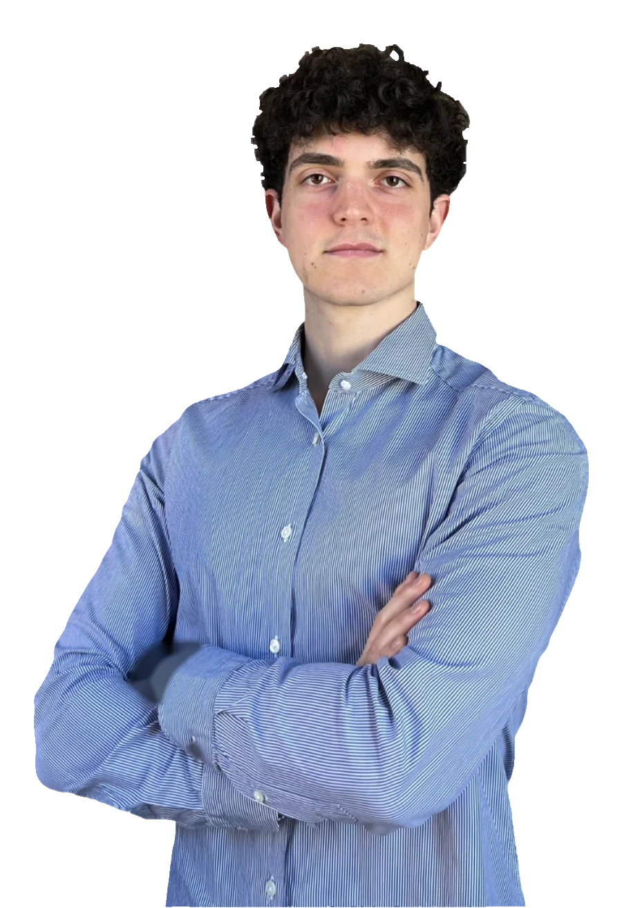

Now
Term 1 · Fall 2026
Korea University Business School
Seoul, South Korea37.59°N 127.03°E
Aspiring business developer on the CEMS Master in International Management, with study and work in four countries so far.

Two passports, Italian and Luxembourgish, and one accent, from Rome.
CEMS Global Master in International Management.
Pick a skill to see where it comes from